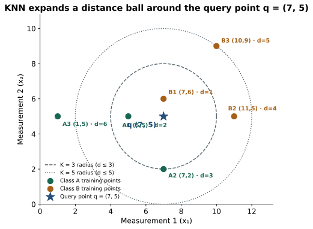
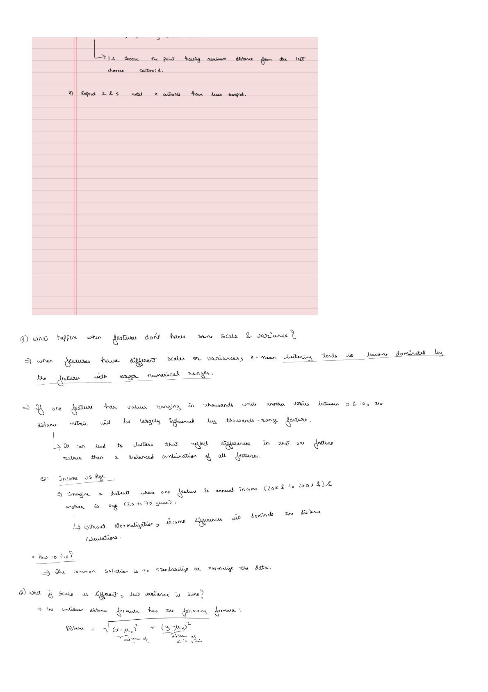

K-Nearest Neighbors: Classify and Predict from Nearby Points
Distance and scaling companion to Clustering.pdf · View a handwritten page
Linear regression, Naïve Bayes, and logistic regression summarize the training data in a fixed set of parameters before seeing a test point. $K$-nearest neighbors (KNN) takes the opposite route: it stores the labeled training rows as they are and delays all calculation until a query point $q$ arrives. To predict for $q$, it measures the distance from $q$ to every training point, selects the $K$ closest neighbors, and combines their labels.
We will work through one six-point dataset where every Euclidean distance to the query point is an exact integer. That lets us verify classification, distance-weighted voting, and KNN regression by hand before connecting the geometry to feature scaling and the curse of dimensionality. For a multi-part deep dive into Voronoi boundaries, Mahalanobis distance, and spatial trees, continue to the K-Nearest Neighbors series.
Six labeled points and one query point
Each training row below has two numeric measurements $(x_1, x_2)$, a class label (A or B) for classification, and a continuous score $y$ for regression. We want to predict both the class and the numeric score at the held-out query point $q = (7, 5)$.
| Point | Class | $x_1$ | $x_2$ | Numeric target $y$ |
|---|---|---|---|---|
| A1 | A | 5 | 5 | 30 |
| A2 | A | 7 | 2 | 24 |
| A3 | A | 1 | 5 | 18 |
| B1 | B | 7 | 6 | 60 |
| B2 | B | 11 | 5 | 72 |
| B3 | B | 10 | 9 | 84 |
Measure every distance to the query point
With $p$ numeric measurements, the Euclidean ($L_2$) distance and Manhattan ($L_1$) distance between a training point $x_i$ and the query $q$ are:
Both belong to the Minkowski family $d_r(x_i,q)=\bigl(\sum_{j=1}^p |x_{ij}-q_j|^r\bigr)^{1/r}$. Subtract $q=(7,5)$ from each training point and sort from smallest Euclidean distance to largest:
| Rank | Point | Class | $x_i - q$ | $d_2(x_i,q)^2$ | Euclidean $d_2$ | Manhattan $d_1$ | Target $y_i$ |
|---|---|---|---|---|---|---|---|
| 1 | B1: (7, 6) | B | (0, 1) | $0^2+1^2=1$ | 1 | 1 | 60 |
| 2 | A1: (5, 5) | A | (−2, 0) | $(-2)^2+0^2=4$ | 2 | 2 | 30 |
| 3 | A2: (7, 2) | A | (0, −3) | $0^2+(-3)^2=9$ | 3 | 3 | 24 |
| 4 | B2: (11, 5) | B | (4, 0) | $4^2+0^2=16$ | 4 | 4 | 72 |
| 5 | B3: (10, 9) | B | (3, 4) | $3^2+4^2=25$ | 5 | 7 | 84 |
| 6 | A3: (1, 5) | A | (−6, 0) | $(-6)^2+0^2=36$ | 6 | 6 | 18 |
Notice that the square root is strictly increasing for non-negative numbers. When we only need the neighbor order under Euclidean distance, sorting by squared distance $d_2(x_i,q)^2$ gives the exact same ranking without computing square roots.

Classify by majority vote across K
Let $\mathcal N_K(q)$ be the index set of the $K$ closest training rows to $q$. In uniform-weight KNN classification, every neighbor in $\mathcal N_K(q)$ casts one equal vote for its class $y_i$. The estimated probability for class $c$ is the fraction of those $K$ neighbors belonging to $c$:
Here $\mathbb I(y_i=c)$ is 1 when neighbor $i$ has label $c$ and 0 otherwise. Stepping through $K=1$, $K=3$, and $K=5$ on our ranked table shows how the neighborhood radius changes the prediction:
| $K$ | Neighbors in $\mathcal N_K(q)$ | Votes (A : B) | $\hat P(\text{A}\mid q)$ | $\hat P(\text{B}\mid q)$ | Predicted class |
|---|---|---|---|---|---|
| 1 | {B1} | 0 : 1 | 0 | 1.0000 | B |
| 3 | {B1, A1, A2} | 2 : 1 | 2/3 ≈ 0.6667 | 1/3 ≈ 0.3333 | A |
| 5 | {B1, A1, A2, B2, B3} | 2 : 3 | 2/5 = 0.4000 | 3/5 = 0.6000 | B |
For binary classification, choosing an odd $K$ ($1, 3, 5, \ldots$) prevents a $50\text{–}50$ vote tie when distances are distinct. With three or more classes—or when an even $K$ like $K=2$ produces a tie such as $\{\text{B1}, \text{A1}\}$—implementations must specify a tie-breaking rule: pick the class whose tied neighbor has the smallest distance, reduce $K$ by 1, or weight votes by distance.
Weight neighbors by inverse distance
Look closely at $K=3$: the single B neighbor (B1) is only 1 unit away from $q$, while the two A neighbors lie 2 and 3 units away. Uniform voting treats $d=1$ and $d=3$ identically. Inverse-distance weighting assigns each neighbor a weight $w_i = 1/d(x_i, q)$ (or $1/d(x_i,q)^2$) so closer points pull harder:
For $K=3$ with neighbors B1 ($d=1$), A1 ($d=2$), and A2 ($d=3$):
Class A weight: $w_{\text{A1}} + w_{\text{A2}} = 1/2 + 1/3 = \mathbf{5/6} \approx 0.8333$.
Total weight: $1 + 1/2 + 1/3 = \mathbf{11/6}$.
Weighted probabilities: $\hat P_{\mathrm{dist}}(\text{B}\mid q) = \frac{6/6}{11/6} = \mathbf{6/11 \approx 0.5455}$, $\;\hat P_{\mathrm{dist}}(\text{A}\mid q) = \mathbf{5/11 \approx 0.4545}$.
Weighting by inverse distance flips the $K=3$ prediction from A ($2/3$ uniform) to B ($6/11$ weighted) because B1 sits right beside the query point. If a query point coincides exactly with a training point ($d=0$), its weight becomes infinite and the prediction averages the labels of all zero-distance matches.
Predict a continuous target with KNN regression
When the target $y$ is a continuous number rather than a category, KNN replaces voting with averaging over the $K$ closest neighbors:
Using our $K=3$ neighbors B1 ($y=60, d=1$), A1 ($y=30, d=2$), and A2 ($y=24, d=3$):
Weighted numerator: $1(60) + \frac12(30) + \frac13(24) = 60 + 15 + 8 = \mathbf{83}$.
Distance-weighted $K=3$ prediction: $83 / (11/6) = 498 / 11 \approx \mathbf{45.2727}$.
Just like regression trees, uniform KNN regression produces a piecewise-constant step function whose predictions always lie between the minimum and maximum training targets ($\min_i y_i \le \hat y(q) \le \max_i y_i$). It cannot extrapolate a rising trend beyond the training range.
Why feature scaling changes nearest neighbors
Page 4 of the handwritten notes (Clustering.pdf) highlights a failure mode shared by every Euclidean-distance method: when one coordinate spans thousands (such as annual income in dollars) and another spans tens (such as age in years), the large-range coordinate dominates $(x_{i1}-q_1)^2 + (x_{i2}-q_2)^2$.
Suppose we have three training profiles and want the 1-nearest neighbor for a query customer earning $\$50{,}000$ at age $27$:
| Profile | Income (USD) | Age (yr) | Raw $d_2$ to $(\$50\text{k}, 27)$ | Standardized $(z_1, z_2)$ | $z$-score $d_2$ to $q$ |
|---|---|---|---|---|---|
| P1 | 80,000 | 25 | 30,000.00 | (+1.36, −0.77) | 2.55 |
| P2 | 52,000 | 60 | 2,000.27 (closest raw) | (−1.02, +1.41) | 2.06 |
| P3 | 60,000 | 27 | 10,000.00 | (−0.34, −0.64) | 0.85 (closest scaled) |
In raw units, the 33-year age gap between the query ($27$) and P2 ($60$) adds only $33^2 = 1{,}089$ to squared distance, whereas a $\$10{,}000$ income gap adds $100{,}000{,}000$. Raw Euclidean distance therefore declares the 60-year-old (P2) five times closer than the 27-year-old earning $\$60{,}000$ (P3). Standardizing each feature using the training mean and training standard deviation,
puts both coordinates in standard-deviation units and makes P3 the closest neighbor ($0.85\sigma$ vs. $2.06\sigma$). Always compute $\mu_j$ and $\sigma_j$ on the training split inside each cross-validation fold before transforming validation or test points.
import numpy as np
from sklearn.neighbors import KNeighborsClassifier, KNeighborsRegressor
X = np.array([[5., 5.], [7., 2.], [1., 5.], [7., 6.], [11., 5.], [10., 9.]])
y_cls = np.array(["A", "A", "A", "B", "B", "B"])
y_reg = np.array([30., 24., 18., 60., 72., 84.])
q = np.array([[7., 5.]])
clf_u = KNeighborsClassifier(n_neighbors=3, weights="uniform").fit(X, y_cls)
clf_w = KNeighborsClassifier(n_neighbors=3, weights="distance").fit(X, y_cls)
reg_u = KNeighborsRegressor(n_neighbors=3, weights="uniform").fit(X, y_reg)
reg_w = KNeighborsRegressor(n_neighbors=3, weights="distance").fit(X, y_reg)
print(clf_u.predict(q)[0], clf_u.predict_proba(q)[0]) # A [0.6667, 0.3333]
print(clf_w.predict(q)[0], clf_w.predict_proba(q)[0]) # B [0.4545, 0.5455]
print(reg_u.predict(q)[0], reg_w.predict(q)[0]) # 38.0 45.2727Choosing K and the bias-variance trade-off
The hyperparameter $K$ controls the size of the local neighborhood:
- Small $K$ (such as $K=1$): low bias, high variance. At $K=1$, the plane is partitioned into a Voronoi diagram around individual training points. Training error is zero whenever points are distinct, but a single noisy or mislabeled point carves out its own decision island.
- Large $K$: higher bias, lower variance. Averaging over more neighbors smooths out isolated noise and stabilizes the boundary, but blurs sharp local structure. In the extreme $K=n$, every query point receives the same global majority class (or global mean $\bar y$), ignoring the query's coordinates completely.
Select $K$ by cross-validation on the training set rather than inspecting test accuracy. A practical search grid tests odd values from $K=1$ up to $\sqrt{n}$, comparing uniform and inverse-distance weights.
Don't confuse KNN with K-means
Both algorithms use Euclidean distance and the letter $K$, so they are frequently mixed up in interviews. Their goals and mechanics are completely different:
| Property | K-Nearest Neighbors (KNN) | K-means Clustering |
|---|---|---|
| Learning task | Supervised classification and regression (uses labels $y_i$). | Unsupervised clustering (no labels $y_i$). |
| What $K$ means | Number of closest training points around a query point $q$. | Total number of cluster centers partitioning the dataset. |
| Training work | $O(1)$ lazy storage (or $O(nd\log n)$ to build a spatial tree). | $O(nKdI)$ iterative Lloyd assignment and center averaging. |
| Prediction work | $O(nd)$ brute-force distance scan per query point. | $O(Kd)$ comparison against the $K$ learned centroids. |
Complexity, high dimensions, and trade-offs
With $n$ training points and $d$ features, brute-force KNN stores all $nd$ values ($O(nd)$ memory) and computes $n$ distances of cost $O(d)$ per query, plus $O(n\log K)$ or $O(n)$ partial selection to pick the $K$ smallest distances—giving $O(nd)$ query time. Spatial indexes such as KD-trees and Ball trees speed up exact queries when $d$ is small ($d \lesssim 15$), while approximate nearest-neighbor (ANN) graphs handle high-dimensional embeddings.
As the dimension $d$ grows, the volume of a sphere concentrates near its outer shell and pairwise distances between random points become nearly equal. In high dimensions, even the "nearest" neighbor can be far away unless the data lie on a lower-dimensional structure—one reason to pair KNN with PCA or Fisher LDA.
| Advantages | Disadvantages |
|---|---|
| No parametric shape assumption: adapts naturally to irregular, multi-modal class boundaries. | Expensive at query time: brute-force prediction scales with the training set size $O(nd)$. |
| Zero training optimization: new labeled examples can be appended immediately without retraining gradients. | Sensitive to feature scales and irrelevant columns: unscaled or noisy coordinates corrupt Euclidean distances. |
| Handles classification, probabilities, and regression: the same neighborhood supports voting and target averaging. | Degrades in high dimensions: distance concentration and storage cost hurt when $d$ and $n$ are large. |
From the handwritten notes
This guide expands the distance-metric and feature-scaling notes on page 4 of Clustering.pdf into a complete worked companion for nearest-neighbor classification and regression.
View original page 4


Further reading: